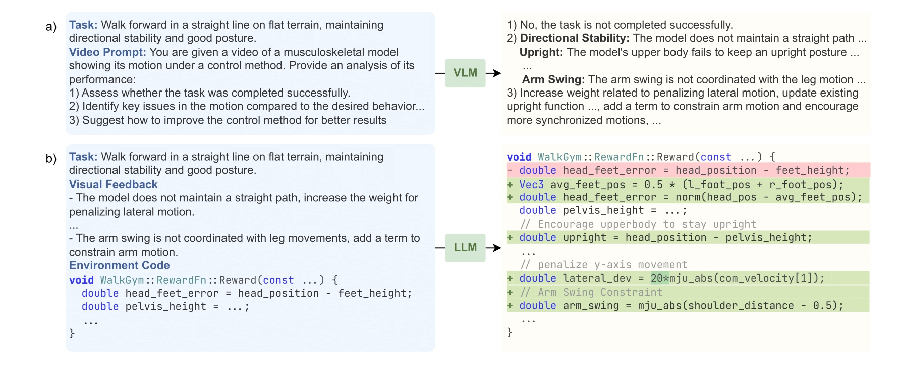
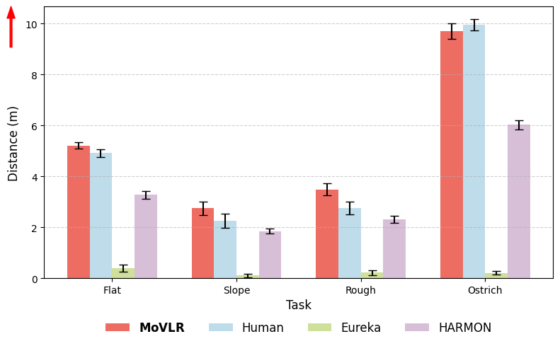
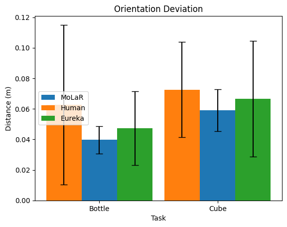
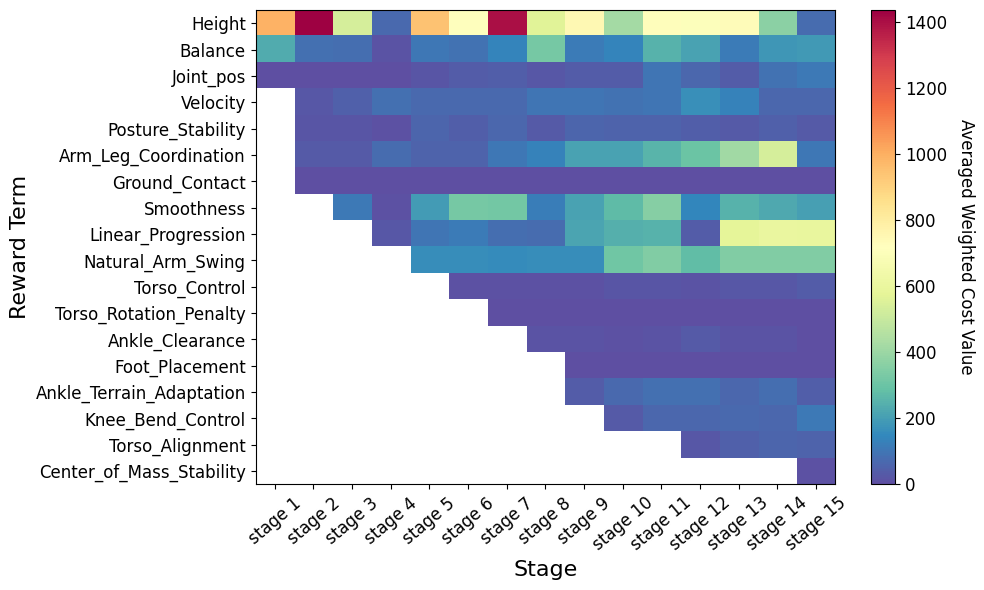
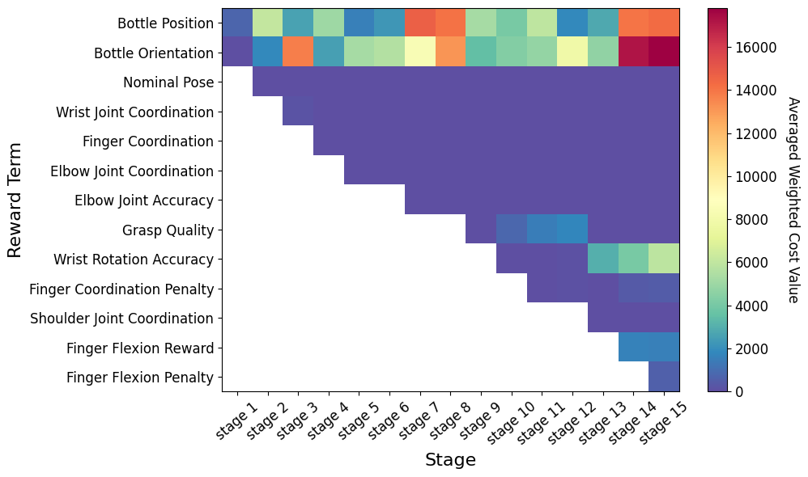

Designing effective reward functions is a fundamental challenge for controlling high-dimensional human musculoskeletal systems. For example, humans can describe movement goals like “walk forward with upright posture”, but the underlying motor strategies that realize these goals are implicit and complex. We introduce Motion from Vision-Language Representation (MoVLR), which uses vision-language models (VLMs) to bridge natural language descriptions and human motion in musculoskeletal control. Instead of handcrafted rewards, MoVLR integrates control learning with VLM feedback to align control policies with physically coherent behaviors. Our approach transforms language and visual assessments into guidance for embodied learning of a variety of human movements from high-level descriptions. MoVLR automatically designs and optimizes rewards for the control of a high-dimensional musculoskeletal model for manipulation and locomotion. These results indicate that vision-language models can effectively ground abstract motion descriptions in the implicit principles of physiological motor control.
Motion from Vision Language Representation
We present Motion from Vision Language Representation (MoVLR), which automatically learns rewards for high-dimensional musculoskeletal control by integrating both descriptive and dynamical feedback. MoVLR extracts high-dimensional musculoskeletal dynamics of candidate rewards via policy optimization and rollout. The resulting control dynamics are rendered into movement videos to provide dynamical feedback. A vision-language model then evaluates the agent's motion and produces structured biomechanical feedback, which is used by a LLM to refine the reward generation process.
By encoding temporal dynamics into semantically meaningful descriptors, MoVLR bridges raw perceptual input with domain-informed motion representations, providing a scalable path toward biomechanically realistic control reward for high-dimensional musculoskeletal systems.
Language-Guided Reward Design
Example inputs and outputs of the (a) VLM, and (b) LLM. The VLM analyzes a video motion sequence based on the given motion description and provides diagnostic feedback. The LLM uses this feedback to design corresponding code modifications to the reward function.

Experiments
Environments
Our experimental setup spans three musculoskeletal systems and a total of eight tasks implemented in the MuJoCo simulator. The suite is designed to capture a broad spectrum of control challenges. It includes three locomotion environments (flat, rough, and sloped terrain) that test stability and adaptability under varying ground conditions. The flat terrain setting additionally includes two variants -- a turning task (left/right directional transitions) and an injured-body condition where selected leg muscle groups are weakened -- to evaluate gait robustness and compensatory control strategies. The suite further includes two manipulation tasks (bottle pouring and cube manipulation) that emphasize coordination and precision, and one non-human locomotion task based on an ostrich muscle model that evaluates generalization beyond human morphology.
Evaluation Results
Comparison with state-of-the-art LLM/VLM methods
MoVLR consistently produces higher task performance, yielding the longest walking distances on flat, sloped, and rough terrains. The improvements are most pronounced in challenging settings, where terrain irregularities require adaptive stability and coordinated motion. Despite slight a slightly lower performance compared to the human baseline, MoVLR also generalizes effectively to the ostrich environment, demonstrating that multimodal reward refinement leads to more robust and transferable control objectives across biomechanical structures.
MoVLR achieves the lowest average position and orientation errors compared to all baselines in manipulation tasks, indicating more precise and stable object interactions. The improvements are consistent across both bottle-pouring and cube-rotation movements, suggesting that multimodal feedback enhances the alignment between high-level motion intent and low-level control behavior.

a) Locomotion Tasks

b) Manipulation Tasks
Evolution of weighted reward terms across refinement stages
The progression of residual reward weights across refinement stages reveals how the feedback-driven process reorganizes the internal optimization landscape toward biomechanically consistent behavior. Visual inspection of the heatmaps shows clear temporal structure in how specific reward terms are emphasized, attenuated, or replaced as refinement proceeds. Rather than uniform or random variation, the weights evolve in a task-specific and interpretable manner that reflects the gradual integration of control priorities derived from feedback.

a) Rough Terrain

b) Bottle Pouring
This progression is also visually illustrated in the figure below, showing the musculoskeletal agent's transition from instability to coordinated walking as successive stages refine control priorities such as balance, posture, and stride formation